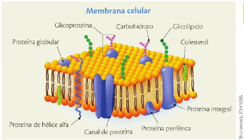
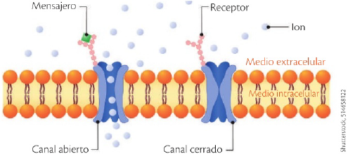
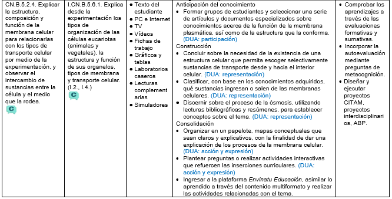

La membrana celular
CN.B.5.2.4. Explicar la estructura, composición y función de la membrana celular para relacionarlas con los tipos de transporte celular por medio de la experimentación, y observar el intercambio de sustancias entre la célula y el medio que la rodea.

Todas las células, sin importar si pertenecen a una bacteria, una planta o un animal, tienen algo en común: una membrana plasmática que las separa del entorno. Esta delgada capa, formada por una bicapa de fosfolípidos y proteínas, es tan flexible que se deforma sin romperse y tan selectiva que actúa como un “guardia de frontera”, decidiendo qué entra y qué sale. Piensa en tu piel: cuando doblas un dedo, tus células no se rompen ni se mezclan con el exterior. ¿Cómo lo logran? ¿Qué mecanismos permiten que agua, oxígeno y nutrientes entren en la célula y que los desechos salgan sin comprometer su integridad?
Fluir y adaptarse
Antes de 1972, se reconocía la naturaleza protectora y semipermeable de la membrana celular y se sabía su composición química. Pero su complejidad y la especificidad con la que cumplía sus funciones solo pudo explicarse tras la propuesta hecha por los estadounidenses Seymour Singer (1924-2017) y Garth Nicolson (1943) quienes basaron su teoría del mosaico fluido en estudios bioquímicos y la ayuda de imágenes obtenidas con microscopios electrónicos. Esta teoría explica que la membrana es una estructura compuesta por una capa doble (bicapa) de fosfolípidos, en la cual están distribuidas otras moléculas, principalmente proteínas, de forma asimétrica.

El arreglo de estas moléculas de fosfolípidos permite que la membrana sea fluida, muy plástica, adaptable a los cambios del medio y de fácil reparación. También permite la difusión de moléculas pequeñas, como las de O2, CO2 y H2O, que se abren paso entre los fosfolípidos.
La alusión a un mosaico para representar la disposición de los componentes de la membrana se debe a la presencia de otras moléculas que están intercaladas en la capa externa, interna o atravesando las dos capas de fosfolípidos. Se trata de carbohidratos, lípidos y proteínas que pueden estar solas o asociadas.
Funciones de la membrana
Constituye el límite externo de la célula que aísla y protege su contenido, además de crear compartimentos internos que permiten la diferenciación de sus funciones. Permite el intercambio selectivo de sustancias entre el medio interno y externo de la célula. Con esto contribuye a mantener la homeostasis, es decir, el estado de equilibrio interno que los organismos logran a través de varias estrategias.
Como mencionamos anteriormente, hay moléculas sencillas que se difunden directamente a través de la membrana; pero en el caso de moléculas más grandes o de iones como los de Calcio, Potasio o Cloro, que son necesarios para mantener el potencial eléctrico de las células, se necesita la ayuda de proteínas que forman puentes que atraviesan la bicapa lipídica y que regulan la cantidad necesaria de este tipo de intercambios.
Facilita la excreción de sustancias o la salida de productos elaborados por la célula, por medio de dos procesos: 1) la exocitosis, cuando vesículas formadas al interior de la célula se fusionan con la membrana para permitir la salida de su contenido; 2) la endocitosis, cuando la membrana engloba sustancias que están en el medio extracelular (fuera de la célula). En este último caso, la endocitosis puede dividirse en fagocitosis, cuando la célula engloba partículas grandes y sólidas como bacterias o restos celulares mediante prolongaciones de su membrana llamadas seudópodos, y en pinocitosis, cuando la membrana se invagina para formar pequeñas vesículas que capturan gotas de líquido extracelular junto con las moléculas disueltas en él; de esta manera, la fagocitosis equivale a que la célula “coma” partículas sólidas, mientras que la pinocitosis es como si la célula “bebiera” líquidos.
Detecta la presencia en el medio extracelular de moléculas extrañas para la célula, gracias a receptores (generalmente glicoproteínas) que los reconocen. Ese es el caso de los antígenos (sustancias ajenas al cuerpo, que al ingresar, desencadenan una reacción inmunológica.) que al ser reconocidos por la membrana de los glóbulos blancos estimulan la producción de anticuerpos que tratarán de destruirlos. Otro ejemplo de receptores son los lípidos que reconocen hormonas y permiten que la célula reaccione ante el estímulo llevado por estos mensajeros químicos.
La membrana puede intervenir en la comunicación entre células vecinas que necesitan trabajar en conjunto. Un ejemplo de esto son los plasmodesmos o discontinuidades que se forman en la membrana de ciertas células vegetales y permiten que compartan citoplasma entre ellas.
La importancia del intercambio de agua a través de la membrana
Por principios físicos, una sustancia que está muy concentrada en un medio tiende a moverse a otro medio de menor concentración. Esto sucede también a través de la membrana y es lo que se conoce con el nombre de difusión. Por ejemplo, cuando los glóbulos rojos transportados por la sangre llegan a los pulmones están cargados de CO2 y tienen poco O2.
Por difusión, esta situación se revierte cuando inspiramos, gracias a lo cual nuestro cuerpo se oxigena nuevamente y recoge los desechos de CO2. La célula tiene que adaptarse rápidamente a cambios ambientales o internos que modifican la concentración de las sustancias disueltas en el citoplasma o en el medio extracelular. Uno de los mecanismos que emplea para ello es la ósmosis, es decir, la difusión del agua a través de la membrana plasmática.

Ejemplo de la acción de un receptor de membrana que, ante el mensajero adecuado, permite la apertura de un canal de proteína para la entrada de iones necesarios para la célula.
Hoy descubrimos que la membrana celular no es solo una barrera, sino un sistema dinámico que regula el transporte de moléculas mediante difusión, ósmosis, transporte activo y endocitosis. Este control mantiene el equilibrio interno —la homeostasis— y permite que las células funcionen de manera coordinada en un organismo. Explorar estos procesos es abrir la puerta a comprender fenómenos como la absorción de nutrientes en el intestino, el intercambio de gases en los pulmones y hasta la acción de los medicamentos en nuestras células. La próxima vez que bebas agua o respires profundo, recuerda: millones de membranas celulares están trabajando para mantenerte con vida.
Laboratorio casero. Escarba el interior de una zanahoria y saca su pulpa, teniendo cuidado de no romper su cubierta externa. Inserta cuatro palillos en forma de cruz para sostener la zanahoria a flote una vez que la hayas introducido en un vaso con agua para beber. Disuelve tres cucharadas de azúcar en un poco de agua, coloca esta mezcla en la cavidad interna de la zanahoria. Déjala reposar y prueba el sabor del agua al día siguiente. ¿Qué sucedió?.
